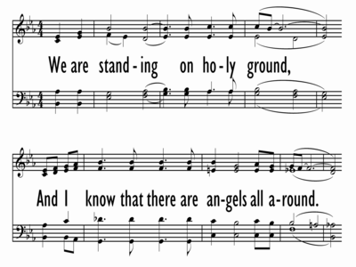

|
|
|
|
In His presence |
這是聖潔地，我恭立在聖潔地， |
|

|
|
|
|
|

-
Geron Davis - Holy Ground (Standing On)
-
Bill and Gloria Gaither - Holy Ground
-
We are standing on holy ground
0960
https://www.musicnotes.com/sheetmusic/mtd.asp?ppn=MN0059423
0961
Blessed Be Your Name
稱讚主聖名
M02G
1960年代出生作者
Davis, Geron, 1960-
戴杰朗
［詞，曲作者］
https://hymnary.org/person/Davis_G
https://www.songfacts.com/facts/geron-davis/holy-ground
戴杰朗（Geron Davis, 1960 -
）的父親是田納西州小鎮賽凡那（Savannah, Tennessee）的一位牧師。
1979年鎮民同心合力建一座新教堂；完工前六週，戴牧師就囑杰朗為獻堂典禮作一首詩歌。
Geron Davis (1964) is a musician best
known as a composer. He was first signed by Meadowgreen Music and best known for
penning the song "Holy Ground". Davis married partner Becky Davis and have
collectively written several songs which include, "In the Presence of Jehovah",
"Mercy Saw Me", "Send It On Down", "Holy Of Holies", "Gentle Hands", "Peace
Speaker", and "Something About My Praise." Davis also a vocalist asked his
sister, Alyson Lovern and her husband Shelton to join he and Becky in forming
the group, Kindred Souls and have been performing together for more than ten
years. They released their debut album, "Let It Rain," in 2002 and gained
considerable attention on AC charts as well as being a break out project for
them.
https://cantonhymn.net
Matt Redman (31)
詩歌賞析： Holy Ground
聖潔地
戴杰朗（Geron Davis, 1960 -
）的父親是田納西州小鎮賽凡那（Savannah, Tennessee）的一位牧師。
1979年鎮民同心合力建一座新教堂；完工前六週，戴牧師就囑杰朗為獻堂典禮作一首詩歌。
戴杰朗在十二、三歲就作曲，他答應了父親，卻遲遲未動筆。
每次他父親問詢時，他總是回答：「我還沒有寫，但我會作的。」
星期六是獻堂典禮的前夕，會友們忙到午夜，作最後的準備。
當大家離去時，戴牧師再次問杰朗，而回答還是一樣。
戴牧師離去後，杰朗坐在發亮的新鋼琴旁思忖：「我們第一次來這�媟q拜，該說些什麼？」
他毫無躊躇地寫下了當時的感受。
不到十五分鐘，整首詩歌完成。
當他走向大門時，他感到主在祂的聖殿中。
他清楚地明白一個十九歲疲倦欲睡的青年是無此能力完成此詩歌的。
翌晨，他教弟弟妹妹這首歌，他們一同在教會獻唱。
不久以後，這首歌被灌製在他友人的唱片中。
它問世後不到24小時，音樂出版商就前來接洽購買這歌，並對戴杰朗說：「這首歌將比你留傳得久遠，因它比你想像的更棒。」不久這首歌就在各教會流傳。
自1986年迄今，它一直高居最佳銷售的排名榜。
這對田納西山腳下的鄉村孩子來講，是始料未及的。
這首歌不祇在主日、在婚禮、喪禮、病時、悲傷時都有人唱。
美國總統柯林頓（Bill Clinton）在當州長時就酷愛此歌，因此邀請戴杰朗夫婦和他們的詩班在他總統就職典禮時獻唱此曲。
1994年，柯林頓母親的葬禮中也選用此詩。
名歌星芭芭拉史翠珊（Barbra Streisand）在葬禮中首次聽到這首歌，後來她就出了「聖潔之地」的專輯唱碟，上書：「我很難描寫當時如被電擊的感受。
這音樂使我的心靈昇華，我決定出此專輯的念頭油然而生。這詞句告訴我們，當我們與神同在時，就是站在聖潔之地上。神是無所不在的，所以地球上每一寸的土地都該是聖潔之地。」
事後有人問戴杰朗看了芭芭拉史翠珊的感言有何感受？
他回答說：「她是百老匯的名歌星，也是電影明星，你想一個19歲毛孩子的作品如何會令她有被電擊之感？
我相信她會同意我如此說，那時刻是她親身經歷了神的同在，面對了萬王之王，萬主之主。」
這首歌對每一個人有同樣的效果，不論貧富、貴賤、在主面前，我們都是一律平等的被造者。